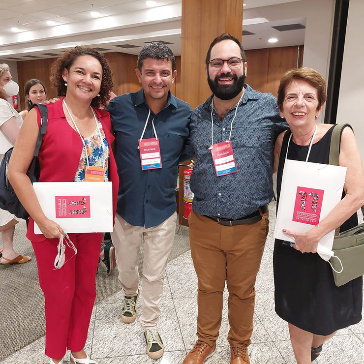
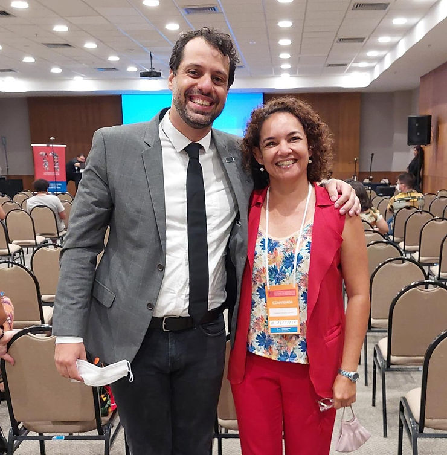

O Conselho Regional de Psicologia do Rio de Janeiro esteve reunido para discuti propostas do 11º Congresso Nacional de Psicologia, a se realizar de 2 a 5 de junho de 2022.
No evento, estavam todos os psicólogos delegados de todos os demais Conselhos Regionais. A ABRAPESP esteve presente através da representação de sua associada Cristianne Carvalho.
O tema do evento em junho será “O impacto Psicossocial da Pandemia: desafios e compromissos para a Psicologia Brasileira frente às desigualdades sociais”.
